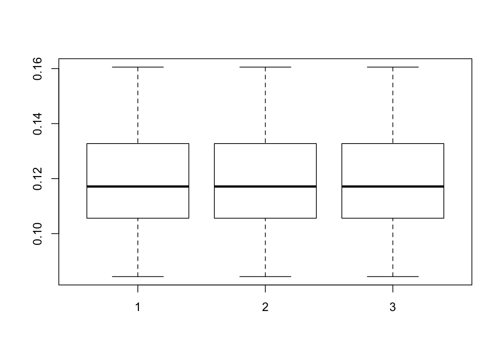

# simulate with f normal and l an equal mixture of 0s and double-exponential
# if missing, add missing data at half of positions
sim_rank1 =function(n=100,p=200,pve=0.5,missing=FALSE){
f = rnorm(p)
half_n = trunc(n/2)
l = c(rep(0,half_n),(-1)^rbinom(n-half_n,1,0.5)*(rexp(n-half_n)))
LF = l %*% t(f)
vLF = var(as.vector(LF))
Y = LF + sqrt(vLF * ((1-pve)/pve)) * matrix(rnorm(n*p),nrow=n,ncol=p)
if(missing){
miss = matrix(rbinom(n*p,1,0.5),nrow=n)
Y[miss==1] = NA
}
return(list(Y=Y,LF=LF))
}
# runs some simple simulations and computes mean squared error for estimate
# of LF
test_sims = function(flash_fn=flashr::flash_add_greedy,flash_param = list(),simfn = sim_rank1, ntest=20){
rmse = rep(0,ntest)
for(i in 1:ntest){
set.seed(i)
d = simfn()
#print(d$Y)
f = do.call(flash_fn,modifyList(flash_param,list(data=d$Y)))
rmse[i] = sqrt(mean((flashr::flash_get_lf(f)-d$LF)^2))
}
return(rmse)
}Run without missing data
res = list()
res[[1]] = test_sims(flash_param = list(Kmax=4))## fitting factor/loading 1## fitting factor/loading 2## fitting factor/loading 1## fitting factor/loading 2## fitting factor/loading 1## fitting factor/loading 2## fitting factor/loading 1## fitting factor/loading 2## fitting factor/loading 1## fitting factor/loading 2## fitting factor/loading 1## fitting factor/loading 2## fitting factor/loading 1## fitting factor/loading 2## fitting factor/loading 1## fitting factor/loading 2## fitting factor/loading 1## fitting factor/loading 2## fitting factor/loading 1## fitting factor/loading 2## fitting factor/loading 1## fitting factor/loading 2## fitting factor/loading 1## fitting factor/loading 2## fitting factor/loading 1## fitting factor/loading 2## fitting factor/loading 1## fitting factor/loading 2## fitting factor/loading 1## fitting factor/loading 2## fitting factor/loading 1## fitting factor/loading 2## fitting factor/loading 1## fitting factor/loading 2## fitting factor/loading 1## fitting factor/loading 2## fitting factor/loading 1## fitting factor/loading 2## fitting factor/loading 1## fitting factor/loading 2res[[2]]= test_sims(flash_param=list(Kmax=4,init_fn=flashr::udv_si_svd))## fitting factor/loading 1
## fitting factor/loading 2## fitting factor/loading 1## fitting factor/loading 2## fitting factor/loading 1## fitting factor/loading 2## fitting factor/loading 1## fitting factor/loading 2## fitting factor/loading 1## fitting factor/loading 2## fitting factor/loading 1## fitting factor/loading 2## fitting factor/loading 1## fitting factor/loading 2## fitting factor/loading 1## fitting factor/loading 2## fitting factor/loading 1## fitting factor/loading 2## fitting factor/loading 1## fitting factor/loading 2## fitting factor/loading 1## fitting factor/loading 2## fitting factor/loading 1## fitting factor/loading 2## fitting factor/loading 1## fitting factor/loading 2## fitting factor/loading 1## fitting factor/loading 2## fitting factor/loading 1## fitting factor/loading 2## fitting factor/loading 1## fitting factor/loading 2## fitting factor/loading 1## fitting factor/loading 2## fitting factor/loading 1## fitting factor/loading 2## fitting factor/loading 1## fitting factor/loading 2## fitting factor/loading 1## fitting factor/loading 2res[[3]] = test_sims(flash_param =list(Kmax=4,ebnm_fn =flashr::ebnm_pn))## fitting factor/loading 1
## fitting factor/loading 2## fitting factor/loading 1## fitting factor/loading 2## fitting factor/loading 1## fitting factor/loading 2## fitting factor/loading 1## fitting factor/loading 2## fitting factor/loading 1## fitting factor/loading 2## fitting factor/loading 1## fitting factor/loading 2## fitting factor/loading 1## fitting factor/loading 2## fitting factor/loading 1## fitting factor/loading 2## fitting factor/loading 1## fitting factor/loading 2## fitting factor/loading 1## fitting factor/loading 2## fitting factor/loading 1## fitting factor/loading 2## fitting factor/loading 1## fitting factor/loading 2## fitting factor/loading 1## fitting factor/loading 2## fitting factor/loading 1## fitting factor/loading 2## fitting factor/loading 1## fitting factor/loading 2## fitting factor/loading 1## fitting factor/loading 2## fitting factor/loading 1## fitting factor/loading 2## fitting factor/loading 1## fitting factor/loading 2## fitting factor/loading 1## fitting factor/loading 2## fitting factor/loading 1## fitting factor/loading 2boxplot(res)
lapply(res,mean)## [[1]]
## [1] 0.1192931
##
## [[2]]
## [1] 0.1192931
##
## [[3]]
## [1] 0.1192931And some with missing data
res = list()
res[[1]] = test_sims(flash_param = list(Kmax=4),simfn = function(...){sim_rank1(...,missing=TRUE)})## fitting factor/loading 1## fitting factor/loading 2## fitting factor/loading 1## fitting factor/loading 2## fitting factor/loading 1## fitting factor/loading 2## fitting factor/loading 1## fitting factor/loading 2## fitting factor/loading 1## fitting factor/loading 2## fitting factor/loading 1## fitting factor/loading 2## fitting factor/loading 1## fitting factor/loading 2## fitting factor/loading 1## fitting factor/loading 2## fitting factor/loading 1## fitting factor/loading 2## fitting factor/loading 1## fitting factor/loading 2## fitting factor/loading 1## fitting factor/loading 2## fitting factor/loading 1## fitting factor/loading 2## fitting factor/loading 1## fitting factor/loading 2## fitting factor/loading 1## fitting factor/loading 2## fitting factor/loading 1## fitting factor/loading 2## fitting factor/loading 1## fitting factor/loading 2## fitting factor/loading 1## fitting factor/loading 2## fitting factor/loading 1## fitting factor/loading 2## fitting factor/loading 1## fitting factor/loading 2## fitting factor/loading 1## fitting factor/loading 2lapply(res,mean)## [[1]]
## [1] 0.1886581sessionInfo()## R version 3.4.3 (2017-11-30)
## Platform: x86_64-apple-darwin15.6.0 (64-bit)
## Running under: macOS High Sierra 10.13.5
##
## Matrix products: default
## BLAS: /Library/Frameworks/R.framework/Versions/3.4/Resources/lib/libRblas.0.dylib
## LAPACK: /Library/Frameworks/R.framework/Versions/3.4/Resources/lib/libRlapack.dylib
##
## locale:
## [1] en_US.UTF-8/en_US.UTF-8/en_US.UTF-8/C/en_US.UTF-8/en_US.UTF-8
##
## attached base packages:
## [1] stats graphics grDevices utils datasets methods base
##
## loaded via a namespace (and not attached):
## [1] Rcpp_0.12.17 bindr_0.1.1 compiler_3.4.3
## [4] pillar_1.2.1 plyr_1.8.4 iterators_1.0.9
## [7] tools_3.4.3 digest_0.6.15 evaluate_0.10.1
## [10] tibble_1.4.2 gtable_0.2.0 lattice_0.20-35
## [13] pkgconfig_2.0.1 rlang_0.2.0.9001 Matrix_1.2-12
## [16] foreach_1.4.4 yaml_2.1.18 parallel_3.4.3
## [19] ebnm_0.1-10 bindrcpp_0.2.2 stringr_1.3.0
## [22] dplyr_0.7.5 knitr_1.20 tidyselect_0.2.4
## [25] rprojroot_1.3-2 grid_3.4.3 glue_1.2.0
## [28] R6_2.2.2 rmarkdown_1.9 purrr_0.2.5
## [31] ggplot2_2.2.1.9000 flashr_0.5-6 ashr_2.2-7
## [34] magrittr_1.5 backports_1.1.2 scales_0.5.0
## [37] codetools_0.2-15 htmltools_0.3.6 MASS_7.3-48
## [40] assertthat_0.2.0 softImpute_1.4 colorspace_1.4-0
## [43] stringi_1.1.7 lazyeval_0.2.1 pscl_1.5.2
## [46] doParallel_1.0.11 munsell_0.4.3 truncnorm_1.0-8
## [49] SQUAREM_2017.10-1